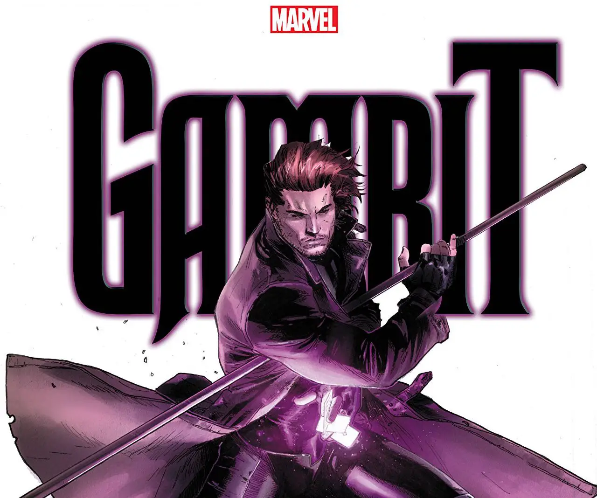

Conhecido por ser um ladrão profissional, poucos X-Men confiaram em Gambit quando ele primeiramente se uniu ao grupo. Por ter protegido Tempestade (X-Men) na época em que ela havia sido regredida a uma criança pela vilã robótica "Babá"
o grupo acabou aceitando-o e logo uma forte atração surgiu entre ele e sua companheira de equipe Rogue (Vampira).
O cajun provou ser uma aquisição valiosa a equipe mas seu passado do qual tanto escondia acabou sendo revelado quando suas ligações com o vilão Sr.
 relacionamento com Vampira por quem se apaixonou Sinistro foram expostas incluindo sua participação no massacre dos Morlocks, prejudicando seu relacionamento com Vampira por quem se apaixonou. Entretanto com o tempo, seus colegas de time aceitaram que Remy honestamente busca redenção e o perdoaram.
relacionamento com Vampira por quem se apaixonou Sinistro foram expostas incluindo sua participação no massacre dos Morlocks, prejudicando seu relacionamento com Vampira por quem se apaixonou. Entretanto com o tempo, seus colegas de time aceitaram que Remy honestamente busca redenção e o perdoaram.